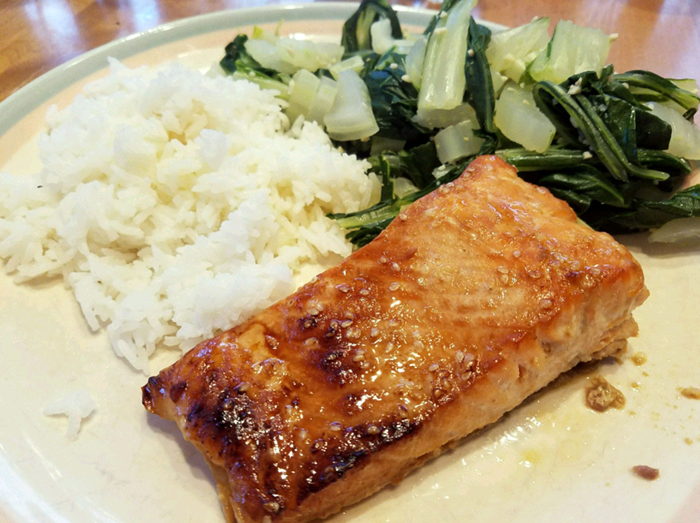

Teriyaki Salmon

Description
If you are tired of your usual salmon recipe, this teriyaki recipe will
add the perfect change to your meal.
Ingredients
- 1/4 cup sesame oil
- 1/4 cup lemon juice
- 1/4 cup soy sauce
- 2 tablespoons brown sugar, or more to taste
- 1 tablespoon sesame seeds
- 1 teaspoon ground mustard
- 1 teaspoon ground ginger
- 1/4 teaspoon garlic powder
- 4(6 ounce) salmon steaks
Steps
- Mix sesame oil, lemon juice, soy sauce, brown sugar, sesame seeds, ground mustard, ginger, and garlic powder in a small saucepan over low heat. Bring to a simmer, stirring until sugar has dissolved. Set aside 1/2 cup of marinade for basting.
- Pour remaining marinade into a resealable plastic bag and place salmon into the marinade. Squeeze air out of the bag, seal, and marinate the salmon steaks for at least 1 hour (2 hours for better flavor). Drain and discard used marinade.
- Set oven rack about 4 inches from the heat source and preheat the oven's broiler. Place salmon steaks into a broiler pan and broil for 5 minutes. Brush steaks with reserved marinade, turn, and broil until fish is opaque and flakes easily, about 5 more minutes. Brush again with marinade.
Return to Main Page